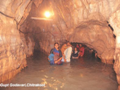

PLACES OF INTEREST (CHITRAKOOT) :
KAMADGIRI
IS SITUATED IN FORESTED HILL OF PRIME RELIGIOUS SIGNIFICANCE. TKIS IS BELIEVED TO THE ORIGINAL CHITRAKOOT, THE SHIV TEMPLE IS LOCATED AT ITS CENTRE. IT IS FAMOUS FOR ITS OWN CIRCUMFERENCE.
